전기산업기사 (2008-07-27 기출문제)
1과목: 전기자기학
1. 자기 회로의 자기 저항에 대한 설명으로 옳지 않은 것은?
- 자기 회로의 단면적에 반비례한다.
- 자기회로의 길이에 반비례한다.
- 자성체의 비 투자율에 반비례한다.
- 단위는 [AT/Wb]이다.
(정답률: 80%)

2. 다음 중 자기 회로와 전기회로의 대응관계로 옳지 않은 것은?
- 자속 - 전속
- 자계 - 전계
- 투자율 - 도전율
- 기자력 - 기전력
(정답률: 44%)
3. 한 폐곡선에 대한 H(자계의 세기)의 선적분이 이 폐곡선으로 둘러싸이는 전류와 같음을 정의한 법칙은?
- 가우스 법칙
- 쿨롱의 법칙
- 비오-사바르 법칙
- 앙페르의 주회적분 법칙
(정답률: 52%)
4. 비유전율이 9이고 비투자율이 1인 매질내의 고유 임피던스는 약 몇 [Ω]인가?
- 42
- 84
- 126
- 377
(정답률: 52%)
5. 인덕턴스가 20[mH]인 코일에 흐르는 전류가 0.2[sec] 동안에 6[A]가 변했다면 코일에 유기되는 기전력은 몇 [V]인가?
- 0.6
- 1
- 6
- 30
(정답률: 70%)
6. 다음 중 전기력선의 성질에 관한 설명으로 옳지 않은 것은?
- 전기력선의 방향은 그 점의 전계의 방향과 같다.
- 전기력선은 전위가 높은 점에서 낮은 점으로 향한다.
- 전하가 없는 곳에서도 전기력선의 발생, 소멸이 있다.
- 전계가 0이 아닌 곳에서 2개의 전기력선은 교차하는 일이 없다.
(정답률: 81%)
7. 길이 10[cm], 반지름 1[cm], 원형 단면을 갖는 공심 솔레노이드의 자기 인덕턴스를 1[mH]로 하기 위해서는 솔레노이드의 권수를 약 몇회로 해야 하는가? (단, μs=1이다.)
- 252
- 504
- 756
- 1006
(정답률: 51%)
8. 자속밀도 0.6[Wb/m2]의 자계중에 20[cm]의 도체를 자계와 직각으로 50[m/sec]로 움직일 때, 도체에 유기되는 기전력은 몇 [V]인가?
- 0
- 6
- 60
- 600
(정답률: 58%)
9. 극판 면적 10[cm2], 간격 1[mm]의 평행판 콘덴서에 비유전율이 3인 유전체를 채웠을 때 전압 100[V]를 가하면, 축적되는 에너지는 약 몇 [J]인가?
- 1.32× 10-7
- 1.32× 10-9
- 2.54× 10-7
- 2.54× 10-9
(정답률: 70%)
10. 반지름 r =1 인 도체구의 표면 전하 밀도가
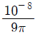
[C/m2]이 되도록 하는 도체구의 전위는 몇 [V]인가?- 10
- 20
- 40
- 80
(정답률: 59%)
11. 10[A]의 전류가 5분간 도선에 흘렀을 때 도선 단면을 지나는 전기량은 몇 [C]인가?
- 50
- 300
- 500
- 3000
(정답률: 64%)
12. 주파수가 1[MHz]인 전자파의 파장은 공기중에서 몇 [m]인가?
- 100
- 200
- 300
- 400
(정답률: 71%)
13. 진공 중에서 대전도체의 표면 전하밀도가 σ[C/m2]이라면 표면의 전계는?
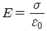
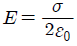
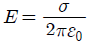
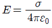
(정답률: 68%)
14. 권수가 200회이고, 자기 인덕턴스가 20[mH]인 코일에 2[A]의 전류를 흘릴 때, 자속은 몇 [Wb]인가? (단, 누설 자속은 없는 것으로 한다.)
- 2×10-2
- 4×10-2
- 2×10-4
- 4×10-4
(정답률: 69%)
15. 변위 전류의 개념 도입은 다음 중 누구의 기여에 의한 것인가?
- 페러데이
- 렌쯔
- 맥스웰
- 로렌츠
(정답률: 65%)
16. 전위 분포가 V=6x + 3[V]로 주어졌을 때 점 (10,0)[m]에서의 전계의 크기 및 방향은 어떻게 되는가?
- 6αx
- -6αx
- 3αx
- -3αx
(정답률: 61%)
17. 그림과 같이 진공 중에 전하량 Q[C]인 점전하 Q를 둘러싸는 경로 C1과 둘러싸지 않은 폐곡선 C2가 있다. 지금 +1[C]의 전하를 화살표 방향으로 경로 C1을 따라 일주시킬 때 요하는 일을 W1, 경로 C2를 일주시키는데 요하는 일을 W2라 할 때, 옳은 것은?
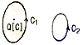
- W1＜W2
- W1＞W2
- W1≠0, W2=0
- W1=W2=0
(정답률: 55%)
18. 다음 중 강자성체가 아닌 것은?
- 니켈
- 철
- 코발트
- 백금
(정답률: 80%)
19. 유전율이 각각 ε1=1, ε2=√3 인 두 유전체가 그림과 같이 접해있는 경우, 경계면에서 전기력선의 입사각 θ1=45°이었다. 굴절각 θ2는 몇 도인가?
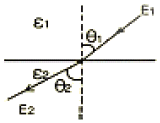
- 20
- 30
- 45
- 60
(정답률: 53%)
20. 일반적으로 도체를 관통하는 자속이 변화하든가 또는 자속과 도체가 상대적으로 운동하여 도체 내의 자속이 시간적으로 변화를 일으키면, 이 변화를 막기 위하여 도체 내에 국부적으로 형성되는 임의의 폐회로를 따라 전류가 유기되는데 이 전류를 무엇이라 하는가?
- 변위전류
- 도전전류
- 대칭전류
- 와전류
(정답률: 71%)
2과목: 전력공학
21. 송전선로에서 코로나 임계전압이 높아지는 경우는 다음중 어느 것인가?
- 기압이 낮은 경우
- 전선의 직경이 큰 경우
- 상대 공기밀도가 작을 경우
- 온도가 높아지는 경우
(정답률: 60%)
22. 저압 뱅킹 배전 방식에서 캐스캐이딩 현상이란?
- 전압 동요가 적은 현상
- 변압기의 부하 배분이 불균일한 현상
- 저압선이나 변압기에 고장이 생기면 자동적으로 고장이 제거되는 현상
- 저압선의 고장에 의하여 건전한 변압기의 일부 또는 전부가 차단되는 현상
(정답률: 71%)
23. 화력발전소에서 석탄 1[kg]으로 발생할 수 있는 전력량은 약 몇 [kWh]인가? (단, 석탄의 발렬량은 5000[kcal/kg], 발전소의 효율은 40%라고 한다.)
- 2.0
- 2.3
- 4.7
- 5.8
(정답률: 55%)
24. 피뢰기의 제한 전압이란?
- 피뢰기 동작 중 단자 전압의 파고치
- 피뢰기의 정격전압
- 속류의 차단이 되는 최고의 교류전압
- 상용 주파수의 방전개시전압
(정답률: 66%)
25. 다음 중 배전 선로에 사용되는 개폐기의 종류와 그 특성의 연결이 바르지 못한 것은?
- 컷아웃 스위치 - 주된 용도로는 주상변압기의 고장이 배전선로에 파급되는 것을 방지하고 변압기의 과부하 소손을 예방하고자 사용한다.
- 부하 개폐기 - 고장 전류와 같은 대 전류는 차단할 수 없지만 평상 운전시의 부하 전류는 개폐할 수 있다.
- 리클러저 - 선로에 고장이 발생 하였을 때, 고장 전류를 검출하여 지정된 시간 내에 고속 차단하고 자동 재폐로 동작을 수행하여 고장 구간을 분리하고나 재송전하는 장치이다.
- 섹셔널라이져 - 고장 발생 시 신속히 고장 전류를 차단하여 사고를 국부적으로 분리시키는 것으로 후비보호 장치와 직렬로 설치하여야 한다.
(정답률: 67%)
26. 전선 지지점간의 고저차가 없는 가공 전선로에서 경간이 100[m], 전선 1[m]의 무게 0.2[kg], 인장하중 550[kg], 안전율 2.2인 경우 이도는 몇 [m]인가?
- 0.8
- 0.85
- 0.9
- 1.0
(정답률: 49%)
27. 전압이 정정치 이하로 되었을 때 동작하는 것으로서 단락 시 고장 검출용으로도 사용되는 계전기는?
- 재폐로 계전기
- 역상 계전기
- 부족전류 계전기
- 부족전압 계전기
(정답률: 74%)
28. 수용율 80[%],부하율 60[%], 설비용량 320[kw]라면, 최대 수용전력은 몇 [kw]인가?
- 192
- 233
- 247
- 256
(정답률: 44%)
29. 송전단 전압 154[kv], 수전단 전압 134[kv], 상차각 60도, 리액턴스 39.8[Ω]일 때, 선로손실을 무시하면, 전송 전력은 약 몇 [MW]인가?
- 322
- 449
- 559
- 689
(정답률: 61%)
30. 송전계통에서 지락보호계전기의 동작이 가장 확실한 접지방식은?
- 비접지
- 고저항 접지
- 직접 접지
- 소호 리액터 접지
(정답률: 74%)
31. 어떤 발전소의 유효 낙차가 100[m]이고, 최대 사용 수량이 10[m3/sec]경우 이 발전소의 이론적인 출력은 몇 [kw]인가?
- 4800
- 9800
- 10000
- 17800
(정답률: 72%)
32. 복도체를 사용한 송전선로를 단도체를 사용한 선로와 비교할 때 알맞은 것은? (단, 복도체의 총 단면적과 단도체의 단면적이 같은 경우이다.)
- 작용 인덕턴스와 작용 정전용량이 모두 감소한다.
- 작용 인덕턴스와 작용 정전용량이 모두 증가한다.
- 작용 인덕턴스는 감소하고, 작용 정전용량은 증가한다.
- 작용 인덕턴스는 증가하고, 작용 정전용량은 감소한다.
(정답률: 76%)
33. 동일 전력을 동일 선간전압, 동일 역률로 동일 거리에 보낼 때, 사용하는 전선의 총중량이 같으면, 단상 2선식과 3상 3선식의 전력 손실비(3상 3선식/단상 2선식)는?
- 1/3
- 1/2
- 3/4
- 1
(정답률: 60%)
34. 3000[KW],역률 80[%](뒤짐)의 부하에 전력을 공급하고 있는 변전소에 전력용 콘덴서를 설치하여 변전소에서의 역률을 90[%]로 향상시키는데 필요한 전력용 콘덴서의 용량은 몇 [KVA]인가?
- 600
- 700
- 800
- 900
(정답률: 64%)
35. 3상 3선식 3각형 배치의 송전선로에 있어서 각 선의 대지 정전 용량이 0.5038[μF]이고, 선간 정전 용량이 0.1237 [μF]일 때, 1선의 작용 정전 용량은 몇 [μF]인가?
- 0.6275
- 0.8749
- 0.9164
- 0.9755
(정답률: 66%)
36. 원자력 발전소에 이용되는 감속재에 대한 설명으로 옳지 않은 것은?
- 중성자 흡수 면적이 클 것
- 감속비가 클 것
- 감속능이 클 것
- 경수, 중수, 흑연등이 사용됨
(정답률: 41%)
37. 3상 3선식에서 수직 배치인 선로에서 오프셋을 주는 주된 이유는?
- 단락 방지
- 전선 진동 억제
- 전선 풍압 감소
- 철탑 중량 감소
(정답률: 74%)
38. 송전 계통의 절연 협조에 있어 절연 레벨을 가장 낮게 잡고 있는 것은?
- 피뢰기
- 단로기
- 변압기
- 차단기
(정답률: 58%)
39. 수전단 전압이 송전단 전압보다 높아지는 현상을 무엇이라 하는가?
- 옵티마 현상
- 자기여자 현상
- 페란티 현상
- 동기화 현상
(정답률: 76%)
40. 송전 계통의 중성점을 직접접지하는 목적과 관계 없는 것은?
- 고장 전류의 크기의 억제
- 이상 전압의 발생의 방지
- 보호 계전기의 신속 정확한 동작
- 전선로 및 기기의 절연 레벨을 경감
(정답률: 56%)
3과목: 전기기기
41. 다음 중 변압기의 무부하손에 해당되지 않는 것은?
- 히스테리시스손
- 와류손
- 유전체손
- 표류부하손
(정답률: 48%)
42. 주파수 60[hz], 슬립 3[%], 회전수 1164[rpm]인 유도전동기의 극수는?
- 4
- 6
- 8
- 10
(정답률: 71%)
43. 다음중 인버터의 설명을 바르게 나타낸 것은?
- 직류-교류 변환
- 교류-교류 변환
- 직류-직류 변환
- 교류-직류 변환
(정답률: 72%)
44. 변압기유로 쓰이는 절연유에 요구되는 특성이 아닌 것은 ?
- 점도가 클 것
- 인화점이 높을 것
- 응고점이 낮을 것
- 절연 내력이 클 것
(정답률: 70%)
45. 다음 중 전기 기계에 있어서 히스테리시스 손을 감소시키기 위하여 어떻게 하는 것이 가장 좋은가?
- 성층 철심 사용
- 규소 강판 사용
- 보극 설치
- 보상 권선 설치
(정답률: 71%)
46. 동기 발전기가 60[hz], 20극이며 회전자 외경이 3[m]인 경우 자극면의 주변속도는 약 몇 [m/s]인가?
- 44.4
- 56.5
- 68.5
- 70.5
(정답률: 63%)
47. 동기 발전기의 돌발 단락 전류를 주로 제한 하는 것은?
- 동기 리액턴스
- 누설 리액턴스
- 권선 저항
- 동기 임피던스
(정답률: 44%)
48. 직류 분권 발전기가 있다. 극당 자속 0.01[Wb], 도체수 400, 회전수 600[rpm]인 6극 직류기의 유기기전력은 몇 [V]인가? (단, 병렬 회로수는 2이다.)
- 100
- 120
- 140
- 160
(정답률: 70%)
49. 직류 전동기 중 부하가 변하면 속도가 심하게 변하는 전동기는?
- 직류 분권 전동기
- 직류 직권 전동기
- 차동 복권 전동기
- 가동 복권 전동기
(정답률: 65%)
50. 무부하 전동기는 역률이 낮지만 부하가 증가하면 역률이 커지는 이유는?
- 전류 증가
- 효율 증가
- 전압 감소
- 2차 저항 증가
(정답률: 37%)
51. 다음 중 직류 전동기의 속도 제어 방법에서 광범위한 속도 제어가 가능하며, 운전 효율이 가장 좋은 방법은?
- 계자 제어
- 직렬 저항 제어
- 병렬 저항 제어
- 전압 제어
(정답률: 68%)
52. 직류 분권 전동기 운전 중 계자 권선의 저항이 증가할 때 회전 속도는?
- 일정하다
- 감소한다
- 증가한다
- 관계없다
(정답률: 70%)
53. 권선형 유도 전동기의 기동법은?
- 기동 보상기법
- 2차 저항에 의한 기동법
- 전전압 기동법
- Y-Δ기동법
(정답률: 59%)
54. 정격 1차 전압이 6600[V], 2차 전압이 220[V], 주파수가 60[hz]인 단상 변압기가 있다. 이 변압기를 이용하여 정격 220[V], 10[A]인 부하에 전력을 공급할 때 변압기의 1차측 입력은 몇 [KW]인가? (단, 부하의 역률은 1)
- 2.2
- 3.3
- 4.3
- 6.5
(정답률: 38%)
55. 정격전압 6000[V], 용량 5000[KVA]의 Y 결선 3상 동기 발전기가 있다. 여자전류 200[A]에서의 무부하 단자전압이 6000[V], 단락전류 600[A]일 때, 이 발전기의 단락비는 약 얼마인가?
- 0.25
- 1
- 1.25
- 1.5
(정답률: 50%)
56. 어떤 정류기의 부하 양단 평균 전압이 2000[V]이고, 맥동률은 2[%]라고 한다. 이 경우 교류분은 몇 [V]가 포함 되어 있는가?
- 20
- 30
- 40
- 60
(정답률: 64%)
57. 다이오드를 사용한 정류회로에서 여러 개를 병렬로 연결하여 사용할 경우 얻는 효과는?
- 다이오드를 과전압으로부터 보호
- 다이오드를 과전류로부터 보호
- 부하 출력의 맥동률 감소
- 전력 공급의 증대
(정답률: 52%)
58. 직류 분권 전동기가 있다. 단자 전압이 215[V], 전기자 전류가 50[A], 전기자 저항이 0.1[Ω]회전수가 1500[rpm]일 때 발생 회전력은 몇 [Nㆍm]인가?
- 66.8
- 72.7
- 81.6
- 91.2
(정답률: 48%)
59. 병렬 운전 중의 A, B 두 동기 발전기 중 A발전기의 여자를 B보다 강하게 하면 A 발전기는?
- 부하 전류가 흐른다.
- 90도 지상 전류가 흐른다.
- 동기화 전류가 흐른다.
- 90도 진상 전류가 흐른다.
(정답률: 53%)
60. 3상 유도 전동기의 2차 저항을 n배로 하면, n배로 되는 것은?
- 역률
- 전류
- 슬립
- 토크
(정답률: 56%)
4과목: 회로이론
61. 전기 회로의 입력을 V1, 출력을 V2라고 할 때 전달 함수는? (단, s=jw이다.)
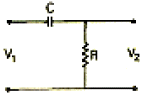
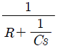
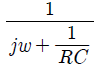
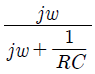
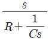
(정답률: 54%)
62. 단위 계단 함수 u(t)의 라플라스 변환은?
- 1
- 1/s
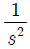
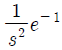
(정답률: 49%)
63. 3상 불평형 전압에서 역상 전압이 25[V]이고, 정상 전압이 100[V], 영상 전압이 10[V]라고 할 때, 전압의 불평형률은 얼마인가?
- 0.25
- 0.4
- 4
- 10
(정답률: 66%)
64. 주어진 시간함수 f(t)=3u(t)+2e-t일 때, 라플라스 변환한 함수 F(s)는?
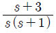
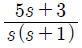
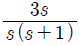
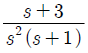
(정답률: 62%)
65. 다음의 파형률 값이 잘못된 것은?
- 정현파의 파형률은 1.414이다.
- 구형파의 파형률은 1이다.
- 전파 정류파의 파형률은 1.11이다.
- 반파 정류파의 파형률은 1.571이다.
(정답률: 45%)
66. 그림과 같은 회로에서 각 계기들의 지시값은 다음과 같다. V는 240[V], A는 5[A], W는 720[W]이다. 이때 인덕턴스 L[H]는? (단, 전원 주파수는 60[hz]라 한다.)
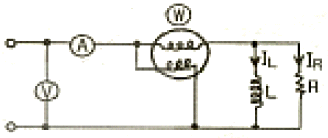
- 1/π
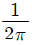
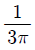
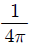
(정답률: 56%)
67. 그림과 같은 회로에서 15[Ω]에 흐르는 전류는 몇 [A]인가?(문제 복원 오류로 그림파일이 없습니다. 정확한 그림 내용을 아시는 분께서는 관리자 메일로 보냊시면 감사하겠습니다. 정답은 3번입니다.)
- 0.5
- 2
- 4
- 6
(정답률: 65%)
68. 3상 유도 전동기의 출력이 10[HP], 선간 전압 200[V], 효율 90[%], 역률 85[%]일 때, 이 전동기에 유입되는 선전류는 약 몇 [A]인가?
- 16
- 20
- 28
- 45
(정답률: 49%)
69. T형 4단자망 회로망에서 영상 임피던스가 Z01=50[Ω], Z02=2[Ω]이고, 전달 정수가 0일 때, 이 회로의 4단자 정수 D의 값은?
- 10
- 5
- 0.2
- 0.1
(정답률: 42%)
70. 어떤 회로에 e=50sin(ωt+θ)[V]를 인가 했을 때, i=4sin(ωt+θ-30°)[A]의 전류가 흘렀다면, 유효 전력은 약 몇 [W]인가?
- 50
- 57.7
- 86.6
- 100
(정답률: 58%)
71. 그림에서 a, b단자의 전압이 100[V], a, b에서 본 능동 회로망 N의 임피던스가 15[Ω]일 때, 단자 a,b에 10[Ω]의 저항을 접속하면 a, b사이에 흐르는 전류는 몇 [A]인가?
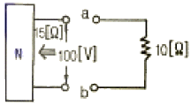
- 2
- 4
- 6
- 8
(정답률: 60%)
72. 불평형 3상 전류 Ia=10+j2, Ib=-20-j24, Ic=-5+j10[A]일 때, 영상전류 I0의 값은 얼마인가?
- 15+j2
- -5-j4
- -15-j12
- 15-j2
(정답률: 59%)
73. 그림과 같은 회로에 대한 서술에서 잘못된 것은?
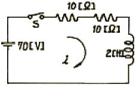
- 이 회로의 시정수는 0.1초이다.
- 이 회로의 특성근은 -10이다.
- 이 회로의 특성근은 +15이다.
- 정상 전류값은 3.5[A]이다.
(정답률: 56%)
74. 키르히호프의 전압 법칙의 적용에 대한 서술 중 잘못된것은?
- 이 법칙은 집중 정수 회로에 적용된다.
- 이 법칙은 회로 소자의 선형, 비선형에는 관계를 받지 않고 적용된다.
- 이 법칙은 회로 소자의 시변, 시불변성에 구애를 받지 않는다.
- 이 법칙은 선형 소자로만 이루어진 회로에 적용된다.
(정답률: 47%)
75. 전달 함수의 성질 중 틀린 것은?
- 어떤 계의 전달 함수는 그 계에 대한 임펄스 응답의 라플라스 변환과 같다.
- 전달 함수 P(s)인 계의 입력이 임펄스 함수(δ함수)이고 모든 초기값이 0이면, 그 계의 출력 변환은 P(s)와 같다.
- 계의 전달 함수는 계의 미분 방정식을 라플라스 변환하고 초기값에 의하여 생긴 항을 무시하면
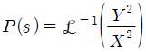
와 같이 얻어진다. - 어떤 계의 전달 함수의 분모를 0으로 놓으면 이것이 곧 특성 방정식이 된다.
(정답률: 40%)
76. 두 코일이 있다. 한 코일의 전류가 매초 40[A]의 비율로 변화 할 때, 다른 코일에는 20[V]의 기전력이 발생한다면, 두 코일의 상호 인덕턴스는 몇 [H]인가?
- 0.2
- 0.5
- 0.8
- 1.0
(정답률: 60%)
77. 그림과 같은 회로에서 스위치 S를 t=0에서 닫았을 때,
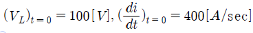
이다. L의 값은 몇 [H]인가?- 0.1
- 0.5
- 0.25
- 7.5
(정답률: 70%)
78. 주기적인 구형파 신호는 그 주파수 성분이 어떻게 되는가?
- 무수히 많은 주파수 성분을 가진다.
- 주파수 성분을 갖지 않는다.
- 직류분만으로 구성된다.
- 교류 합성을 갖지 않는다.
(정답률: 64%)
79. 전원과 부하가 모두 Δ결선된 3상 평형 회로가 있다. 전원 전압이 200[V], 부하 임피던스가 6+j8[Ω]인 경우 선전류[A]는?
- 20
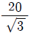
- 20√3
- 10√3
(정답률: 62%)
80. L형 4단자 회로망에서 4단자 정수가 B= 5/3, C=1이고, 영상임피던스
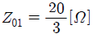
일 때, 영상임피던스 Z02[Ω]는?- 0.25
- 11
- 9
- 0.09
(정답률: 39%)
5과목: 전기설비기술기준 및 판단 기준
81. 내부 고장이 발생하는 경우를 대비하여 자동차단장치 또는 경보장치를 시설하여야 하는 특별고압용 변압기의 뱅크 용량의 구분으로 알맞은 것은?
- 5000[KVA] 미만
- 5000[KVA] 이상 10000[KVA] 미만
- 10000[KVA] 이상
- 타냉식 변압기
(정답률: 55%)
82. 가로등, 경기장, 공장, 아파트 단지 등의 일반 조명을 위하여 시설하는 고압 방전등은 그 효율이 몇 [lm/W]이상의 것이어야 하는가?(오류 신고가 접수된 문제입니다. 반드시 정답과 해설을 확인하시기 바랍니다.)
- 30
- 50
- 70
- 100
(정답률: 59%)
83. 변압기의 안정권선이나 유휴권선 또는 전압조정기의 내장 권선을 이상전압으로부터 보호하기 위하여 특히 필요할 경우에 그 권선에 접지공사를 할 때에는 몇 종 접지 공사를 하여야 하는가?(관련 규정 개정전 문제로 여기서는 기존 정답인 1번을 누르면 정답 처리됩니다. 자세한 내용은 해설을 참고하세요.)
- 제 1종 접지 공사
- 제 2종 접지 공사
- 제 3종 접지 공사
- 특별 제 3종 접지 공사
(정답률: 37%)
84. 발전기, 전동기, 조상기, 기타 회전기 (회전 변류기 제외)의 절연 내력 시험시 시험 전압은 어느곳에 가하면 되는가?
- 권선과 대지간
- 외함과 전선간
- 외함과 대지간
- 회전자와 고정자간
(정답률: 54%)
85. 가공전선로의 지지물에 시설하는 지선으로 연선을 사용할 경우 소선은 몇 가닥 이상 이어야 하는가?
- 2
- 3
- 5
- 9
(정답률: 66%)
86. 다음 중 전기 울타리의 시설에 관한 사항으로 옳지 않은 것은?
- 전원 장치에 전기를 공급하는 전로의 사용전압은 600[V]이하일 것
- 사람이 쉽게 출입하지 아니하는 곳에 시설 할 것
- 전선은 인장강도 1.38[KN]이상의 것 또는 지름 2[mm]이상의 경동선일 것
- 전선과 수목 사이의 이격거리는 30[cm] 이상일 것
(정답률: 60%)
87. 차량 기타 중량물의 압력을 받을 우려가 없는 장소에 지중 전선로를 직접 매설식에 의하여 시설하는 경우 매설 깊이는 최소 몇 [cm]이상으로 하면 되는가?(오류 신고가 접수된 문제입니다. 반드시 정답과 해설을 확인하시기 바랍니다.)
- 30
- 60
- 80
- 100
(정답률: 61%)
88. 가반형의 용접 전극을 사용하는 아크 용접장치의 용접 변압기 1차측 전로의 대지전압은 몇 [V]이하여야 하는가?
- 60
- 150
- 300
- 400
(정답률: 66%)
89. 선로 길이가 몇 [km]이상의 고압 가공 전선로에는 보안상 특히 필요한 경우에 가공 전선로의 적당한 곳에서 통화 할수 있는 휴대용 또는 이동용의 전력보안 통신용 전화설비를 시설 하여야 하는가?
- 2
- 5
- 10
- 50
(정답률: 43%)
90. 백열전등 또는 방전등에 전기를 공급하는 옥내 전로의 대지 전압은 몇 [V]이하이어야 하는가? (단, 백열전등 또는 방전등 및 이에 부속하는 전선은 사람이 접촉 할 우려가 없다고 한다.)
- 150
- 220
- 300
- 600
(정답률: 68%)
91. 한 수용장소의 인입선에서 분기하여 지지물을 거치지 않고 다른 수용 장소의 인입구에 이르는 부분의 전선을 무엇이라고 하는가?
- 가공 인입선
- 인입선
- 연접인입선
- 옥측배선
(정답률: 64%)
92. 흥행장의 저압 전기설비 공사로 무대 무대마루 밑, 오케스트라 박스 영사실 기타 사람이나 무대 도구가 접촉할 우려가 있는 곳에 시설하는 저압 옥내 배선 전구선 또는 이동 전선은 사용 전압이 몇 [V]미만 이어야 하는가?
- 100
- 200
- 300
- 400
(정답률: 61%)
93. 다음 중 고압 가공인입선의 시설 방법으로 옳지 않은 것은?
- 고압 가공 인입선 아래 위험 표시를 하고 지표상 3.5[m] 높이에 시설하였다.
- 전선은 지름이 5[mm]의 경동선의 고압 절연전선을 사용 하였다.
- 애자사용 공사로 시설하였다.
- 15[m]떨어진 다른 수용가에 고압 연접 인입선을 시설하였다.
(정답률: 35%)
94. 가공 전선로의 지지물에 취급자가 오르고 내리는데 사용하는 발판 볼트 등은 일반적으로 지표상 몇 [m]미만에 시설하여서는 아니 되는가?
- 1.2
- 1.5
- 1.8
- 2.0
(정답률: 70%)
95. 특별고압 가공전선로 중 지지물로 직선형의 철탑을 연속하여 10기 이상 사용하는 부분에는 몇 기 이하마다 내장 애자 장치가 있는 철탑 또는 이와 동등 이상의 강도를 가지는 철탑 1기를 시설 하여야 하는가?
- 1
- 3
- 5
- 10
(정답률: 53%)
96. 직류식 전기 철도에서 가공으로 시설하는 배류선으로 동복강선을 사용한다면 그 지름은 몇 [mm]이상의 것을 사용하여야 하는가?
- 2.0
- 3.0
- 3.5
- 4.0
(정답률: 24%)
97. 제 3종 접지 공사를 할 때, 접지 저항값과 접지선(연동선)의 굵기에 대한 기준으로 옳은 것은?
- 접지 저항값 10옴 이하, 접지선의 지름 2.6[mm] 이상
- 접지 저항값 10옴 이하, 접지선의 지름 4[mm]이상
- 접지 저항값 100옴 이하, 접지선의 지름 2.6[mm]이상
- 접지 저항값 100옴 이하, 접지선의 지름 1.6[mm]이상
(정답률: 17%)
98. 방전등용 안정기로부터 방전관까지의 전로를 무엇이라고 하는가?
- 소세력 회로
- 관등회로
- 근접회로
- 약전류 회로
(정답률: 71%)
99. 고압용 또는 특별 고압용 개폐기를 시설할 때 반드시 조치하지 않아도 되는 것은?
- 작동시에 개폐상태가 쉽게 확인될 수 없는 경우에는 개폐 상태를 표시하는 장치
- 중력 등에 의하여 자연히 작동할 우려가 있는 것은 자물쇠 장치 기타 이를 방지하는 장치
- 고압용 또는 특별고압용이라는 위험 표시
- 부하 전류의 차단용이 아닌 것은 부하 전류가 통하고 있을 경우에 개로 할 수 없도록 시설
(정답률: 41%)
100. 66[KV] 가공 전선과 6[KV] 가공 전선을 동일 지지물에 병가하는 경우에 특별고압 가공 전선은 케이블인 경우를 제외하고는 단면적이 몇 [mm2]이상인 경동연선을 사용하여야 하는가?
- 22
- 38
- 55
- 100
(정답률: 57%)